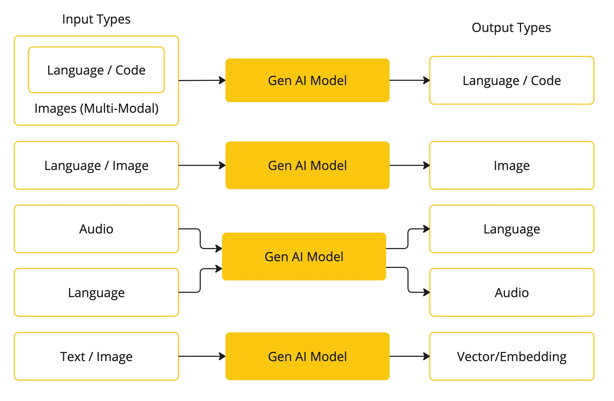
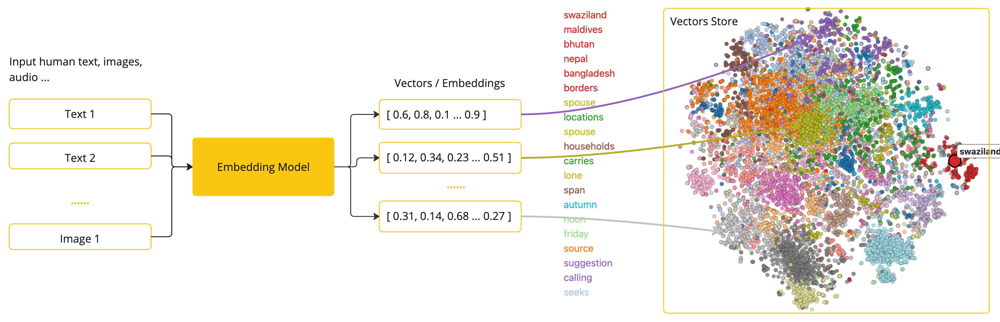
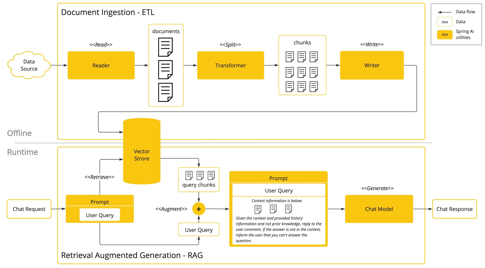

AI Concepts
This section describes core concepts that Spring AI uses. We recommend reading it closely to understand the ideas behind how Spring AI is implemented.
Models
AI models are algorithms crafted to process and generate information, often emulating human cognitive functions. By discovering patterns and insights within large datasets, these models can produce predictions, text, images, or other outputs, thereby enhancing various industry applications.
AI models come in various types, each tailored for specific use cases. While ChatGPT has gained attention for its generative AI capabilities in text input and output, numerous models and companies offer a variety of inputs and outputs. Prior to ChatGPT, text-to-image generation models like Midjourney and Stable Diffusion intrigued many users.
The table below categorizes several models based on their input and output types:

Spring AI currently supports models that process input and output as language, image, and audio. The last row in the previous table, which accepts text as input and outputs numbers, is more commonly known as embedding text and represents the internal data structures used in an AI model. Spring AI has support for embeddings to support more advanced use cases.
What sets models like GPT apart is their pre-trained nature, as indicated by the "P" in GPT—Chat Generative Pre-trained Transformer. This pre-training feature transforms AI into a general developer tool that does not require an extensive machine learning or model training background.
Prompts
Prompts are the key instructions we give to an AI model to get specific responses. If you've used ChatGPT, you might think a prompt is just the text you type in. However, it's more than that. In many AI models, a prompt includes various parts, not just a simple sentence.
ChatGPT’s API uses different types of text inputs within a prompt, each with a specific role. For instance, there's a "system" role that guides the model on how to behave and sets the scene for the interaction. There's also a "user" role, which is the input from you, the user.
Creating good prompts is both an art and a science. ChatGPT is designed to engage in human-like conversations. This is very different from using something like SQL to "ask a question." With AI, you have to communicate like you're talking to another person.
The importance of this interaction has led to the field of "Prompt Engineering." This involves various techniques to improve how prompts are crafted. Spending time on crafting a good prompt can greatly enhance the AI’s response.
People now often share prompts, and there's a lot of academic research on this topic. For example, crafting an effective prompt can be quite surprising. A recent study found that a very effective prompt starts with, “Take a deep breath and work on this step by step.” This shows how crucial language is. We are still learning how to best use previous AI models like ChatGPT 3.5, and even newer versions are being developed.
Prompt Templates
Creating effective prompts involves establishing the context of the request and substituting parts of the request with values specific to the user’s input. This process uses traditional text-based template engines for prompt creation and management. Spring AI employs the OSS library StringTemplate for this purpose. For instance, consider the simple prompt template:
Tell me a {adjective} joke about {content}.
In Spring AI, prompt templates can be likened to the "'View'" in Spring MVC architecture. A model object, typically a java.util.Map, is provided to populate placeholders within the template. The "'rendered'" string becomes the content of the prompt supplied to the AI model.
There is considerable variability in the specific data format of the prompt sent to the model. Initially starting as simple strings, prompts have evolved to include multiple messages, where each string in each message represents a distinct role for the model.
Embeddings
Embeddings transform text into numerical arrays or vectors, enabling AI models to process and interpret language data. This transformation from text to numbers is a key element in how AI interacts with and understands human language.

As a Java developer exploring AI, it’s not necessary to comprehend the intricate mathematical theories or the specific implementations behind these vector representations. A basic understanding of their role and function within AI systems suffices, particularly when you’re integrating AI functionalities into your applications.
Embeddings are particularly relevant in practical applications like the Retrieval Augmented Generation (RAG) pattern. They enable the representation of data as points in a semantic space, which is akin to the 2-D space of Euclidean geometry, but in higher dimensions. This means just like how points on a plane in Euclidean geometry can be close or far based on their coordinates, in a semantic space, the proximity of points reflects the similarity in meaning. Sentences about similar topics are positioned closer in this multi-dimensional space, much like points lying close to each other on a graph. This proximity aids in tasks like text classification, semantic search, and even product recommendations, as it allows the AI to discern and group related concepts based on their 'location' in this expanded semantic landscape.
You can think of this semantic space as a vector.
Tokens
Tokens serve as the building blocks of how an AI model works. On input, models convert words to tokens. On output, they convert tokens back to words.
In English, one token roughly corresponds to 75% of a word. For reference, Shakespeare’s complete works, totaling around 900,000 words, translates to approximately 1.2 million tokens.

Perhaps more important is that Tokens = Money. In the context of hosted AI models, your charges are determined by the number of tokens used. Both input and output contribute to the overall token count.
Also, models are subject to token limits, which restrict the amount of text processed in a single API call. This threshold is often referred to as the 'context window'. The model does not process any text that exceeds this limit.
For instance, ChatGPT3 has a 4K token limit, while GPT4 offers varying options, such as 8K, 16K, and 32K. Anthropic’s Claude AI model features a 100K token limit, and Meta’s recent research yielded a 1M token limit model.
To summarize the collected works of Shakespeare with GPT4, you need to devise software engineering strategies to chop up the data and present the data within the model’s context window limits. The Spring AI project helps you with this task.
Bringing Your Data & APIs to the AI Model
How can you equip the AI model with information on which it has not been trained?
Note that the GPT 3.5/4.0 dataset extends only until September 2021. Consequently, the model says that it does not know the answer to questions that require knowledge beyond that date. An interesting bit of trivia is that this dataset is around 650GB.
Three techniques exist for customizing the AI model to incorporate your data:
-
Fine Tuning: This traditional machine learning technique involves tailoring the model and changing its internal weighting. However, it is a challenging process for machine learning experts and extremely resource-intensive for models like GPT due to their size. Additionally, some models might not offer this option.
-
Prompt Stuffing: A more practical alternative involves embedding your data within the prompt provided to the model. Given a model’s token limits, techniques are required to present relevant data within the model’s context window. This approach is colloquially referred to as “stuffing the prompt.” The Spring AI library helps you implement solutions based on the “stuffing the prompt” technique otherwise known as Retrieval Augmented Generation (RAG).

Retrieval Augmented Generation
A technique termed Retrieval Augmented Generation (RAG) has emerged to address the challenge of incorporating relevant data into prompts for accurate AI model responses.
The approach involves a batch processing style programming model, where the job reads unstructured data from your documents, transforms it, and then writes it into a vector database. At a high level, this is an ETL (Extract, Transform and Load) pipeline. The vector database is used in the retrieval part of RAG technique.
As part of loading the unstructured data into the vector database, one of the most important transformations is to split the original document into smaller pieces. The procedure of splitting the original document into smaller pieces has two important steps:
Split the document into parts while preserving the semantic boundaries of the content. For example, for a document with paragraphs and tables, one should avoid splitting the document in the middle of a paragraph or table. For code, avoid splitting the code in the middle of a method’s implementation.
Split the document’s parts further into parts whose size is a small percentage of the AI Model’s token limit.
The next phase in RAG is processing user input. When a user’s question is to be answered by an AI model, the question and all the “similar” document pieces are placed into the prompt that is sent to the AI model. This is the reason to use a vector database. It is very good at finding similar content.

-
The ETL pipeline provides further information about orchestrating the flow of extracting data from the data sources and store it in a structured vector store, ensuring data is in the optimal format for retrieval by the AI model.
-
The ChatClient - RAG explains how to use the QuestionAnswerAdvisor advisor to enable the RAG capability to your application.